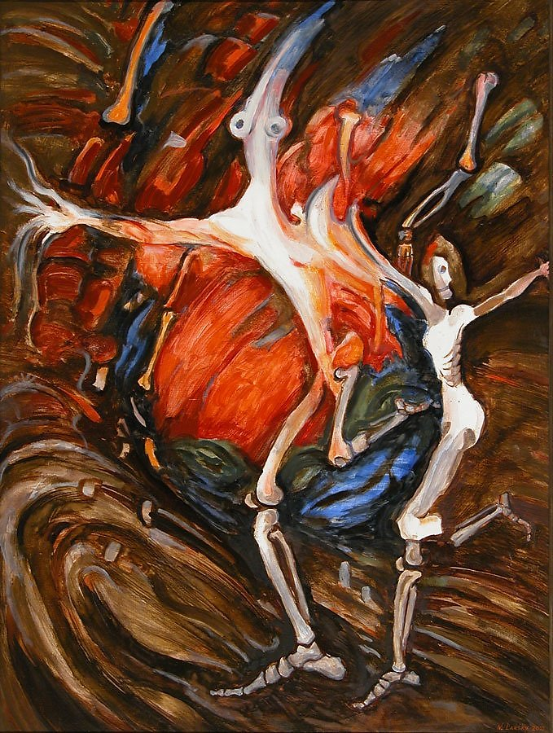
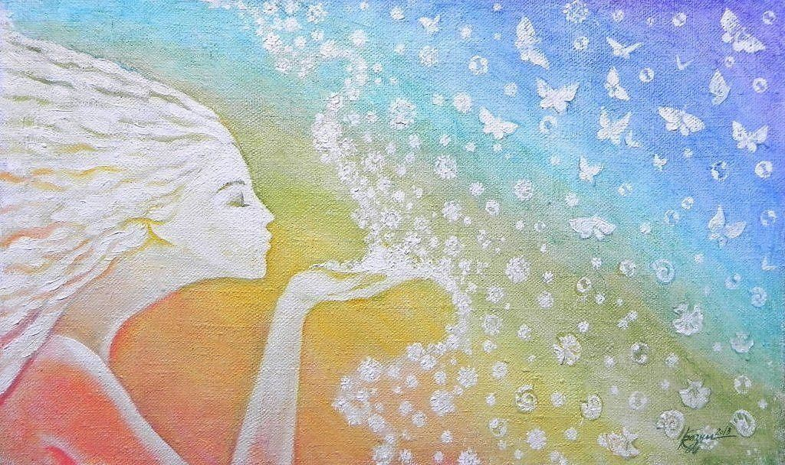
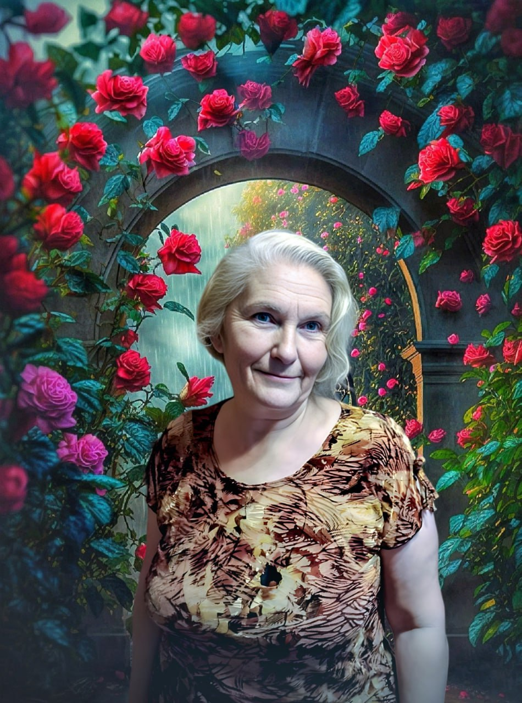

Картина «Бегство из ада», Николай Ларский (Масло, акрил)
Когда спасшийся после кораблекрушения, собирает прибитые к берегу остатки вещей, он обустраивает себе пристанище, где можно безопасно ждать помощь. Он искренне благодарит Всевышнего за спасение и молится, чтобы его нашли. Но он все еще надеется и на себя. Человек не сдается и это заслуживает уважения.
Но идет время, а горизонт остается чист. В один из одинаковых долгих дней, вспыхнув от случайной искры, его обитель безопасности сгорает. И, вот теперь, испытывая наивысшую степень отчаяния, человек понимает, что у него не осталось ничего, что могло бы защитить его от стихии. Единственной надеждой человека остается Бог. Человек падает на колени и кричит. Его призыв о помощи неистов настолько же, насколько велико его отчаяние. «Боже, помоги!», - голос несчастного срывается в хрип, потом в бессильный шепот и он повторяет это до тех пор, пока не проваливается, в похожий на обморок, сон.
А утром на горизонте появляется судно, которое уверенно спешит к острову.
«Как вы узнали, что я здесь?», - спрашивает человек своих спасителей.
«Мы увидели ваш сигнальный костёр», - отвечают они.
Наивысочайшее отчаяние - это эмоциональный момент взрывного характера, короткий и максимально проявленный. В психологии этот момент называют аффектом. Но верующий человек понимает, что в такие минуты его слышит Небо. Эмоции этого процесса настолько сильны, что иногда после такого состояния реальность делится на «до» и «после». Случаются, похожие на чудо события, и ситуации меняются. У кого-то на горизонте появляется корабль), а у кого-то поисковик выдает мою статью. Случайно?) Безусловно – нет.
В прошлом материале я рассказала тебе, как можно исцелить от зависимости близкого человека или исцелиться самой. И, если среди твоих близких были люди с проблемными склонностями, курс “Тайна исцеления” надежно защитит от влияния наследственности тебя и твоих детей.
Теперь я хочу поподробнее остановиться непосредственно на том, как происходит исцеление.
Существуют три этапа процесса:
Человек живет в социуме, а потому зависим от его составляющих. Сюда относятся не только взаимоотношения с близким окружением, но и ежедневные составляющие быта, приобретающие порой качество излишней значимости.
Это, например, статусность одежды и транспортных средств, игромания и компьютерная зависимость, зависание в соцсетях, переедание или наоборот – стремление похудеть, адреналиновая зависимость /экстремальный спорт/ и многое другое.
Интересно, что стремление к богатству или власти общество считает вполне приемлемым, хотя зла от этих «маниакальных» состояний совсем не меньше, чем от алкоголизма или наркомании. Более того, часто алкоголизм и наркомания являются следствием того, что именно эти стремления удовлетворить не удается.
Да, зависимость на какое-то время может спрятать сознание в «дурман». Но ситуацию это не исправляет. Достижения в компьютерной игре не становятся достижениями в жизни, а алкоголь может лишь затянуть решение проблемы. Ровно как и проживание чувств героини телесериала не помогает прояснить отношения в личной жизни, а постоянное ограничение калорий не обеспечивает счастливое отражение в зеркале.
Для злоупотребляющего человека зависимость проявляется в виде его желаний. Такие желания вызываются одним из двух типов поведения:
В первом случае человек просто получает удовольствие от состояния, которое ему обеспечивает алкоголь, наркотик, шоколадка, азарт или что-то еще. Но почему именно этому человеку именно в этот момент нужно дополнительное удовольствие? Что ему не хватает? У всех свои ситуации, но всегда, когда человек уходит от реальности, ему не хватает Любви. Того самого кайфа, который помнит душа человека от соприкосновения с Богом. Не умея испытывать эти чувства наивысочайшего божественного наслаждения, человек использует суррогатное чувство любви, полученное от наркотических или алкогольных средств.
Эту тему мы рассмотрим в следующих статьях.
Во втором случае ему уже не просто не хватает Любви – у него переизбыток негатива, обид, злости и всего прочего. Реальность сурова к нему возможно потому, что он сам провоцирует непонимание в общении с окружающими. Это проявление отсутствия наполненности светом, которое дает изначально соприкосновение с божественным. Он не понимает этого. Он мечется в поисках Любви. Не осознает, что становится проблемным и токсичным. Не находя правильных методов и решений, человек опьянением градусами или веществами, «убирает» накопившиеся отрицательные реакции и ощущения своей нервной системы. То есть, «борется» со стрессом так, как умеет, “лечится”.
Насильственное ограничение зависимости не менее опасно, чем она сама. Если просто, без проработки эмоций, ограничить подростка в компьютерных играх или отобрать очередную дозу наркотика у зависимого, то ситуация только ухудшится. Скопившийся негатив, не имеющий привычного выхода, в стресс все же выльется. Только вот его новое проявление может быть гораздо опаснее предыдущего. Это может быть болезнь, домашнее насилие, длительная депрессия и даже правонарушения. В то время как качественная и последовательная работа с психологом учит человека самостоятельно управлять эмоциями и справляться с ними, а не убегать от решения вопросов в зависимости.
Чтобы стресс не мог возникнуть и спровоцировать погружение в тревожность, гнев, перевозбуждение, бессилье, состояние перепада настроений, вину, стыд и тд., нужно научиться управлять своими эмоциями. Предотвратить все это возможно в том случае, если отрицательная эмоция действует максимально короткий промежуток времени.
Я помогаю обратившимся изменить реакцию на негативные эмоции и контролировать свое эмоциональное состояние за счет обучения саногенному мышлению. Оно приводит к оздоровлению всего организма человека. Люди, мыслящие саногенно, адекватно и критически осмысливают происходящее и переосмысливают произошедшее. Находящиеся рядом с ними близкие как бы “заражаются” умением саногенно мыслить.
Избавившись от внутренней напряженности, от обид, страхов и комплексов, люди становятся свободны от зависимостей.

Детский рисунок «Свет»
Давным-давно, в одном из селений Китая, жил мудрец. Местные и жители соседних сел почитали и любили этого человека. Он помогал добрым словом и правильным советом всем, кто обращался к нему за помощью. Но среди сельчан был и тот, кто завидовал славе мудреца и постоянно критиковал его. Однако люди понимали, что этот человек лжец и посмеивались над ним. Тогда завистник задумал одну хитрость. Он решил поймать и принести к мудрецу в сомкнутых ладонях бабочку, собрав, при этом, всех жителей селения и задать ему коварный вопрос о том живая она или нет? «Ведь, если мудрец действительно мудр, он должен угадать это», - рассказывал лжец людям. На самом деле, он решил, что если мудрец объявит бабочку живой, он сожмет ладони. А, если мудрец скажет, что бабочка не живая, то все увидят, как она выпорхнет целой и невредимой. Любой ответ мудреца, по замыслу завистника, должен был стать ошибочным.
И вот настал момент истины. В окружении сельчан, хитрец пришел к мудрецу.
«Жива ли бабочка в моих ладонях?», - спросил он старца.
«Все в руках твоих человек», - усмехнувшись, ответил мудрец.
В какой-то степени, зависимость можно считать благом. Ведь Всевышний дает тебе или твоему близкому пройти серьезное испытание. Этот Урок несомненно выведет тебя на новый уровень веры, понимания себя, мироустройства и получения материальных благ.
Кроме того, проработка эмоций, пусть даже вызванная необходимостью, всегда открывает человеку новые возможности, дарит состояние легкости и радости, избавление от тяжкого груза негативных эмоций, формирует гармоничные отношения.
Можно долго лукавить с самим собой и даже сочинять «красочные фэнтези» для близких, вольно или невольно оправдывая свои слабости или слабости своего близкого. Способ «выпорхнуть из созависимых отношений» есть. И он в твоих руках, человек.
Я помогу тебе. Я его знаю.

Твой проводник в Любовь Тамара Шомина
08.03.2024